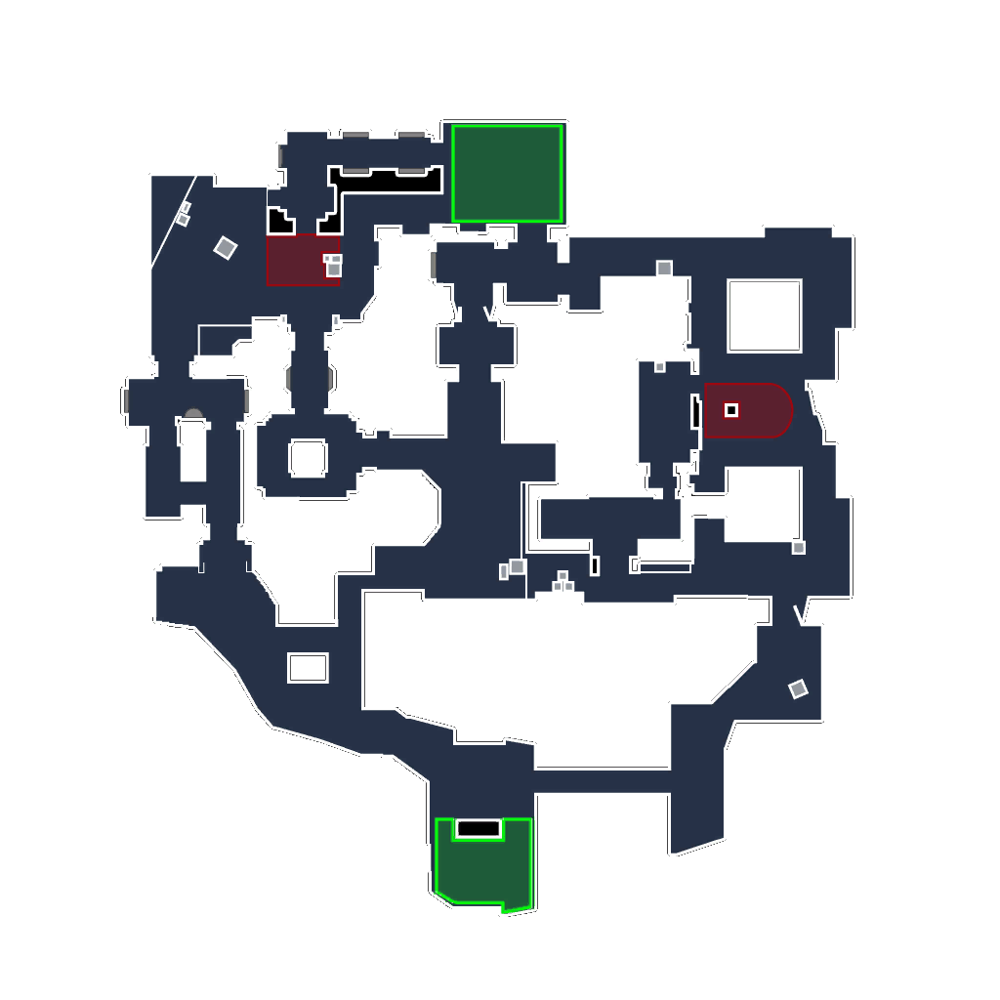

<html>
<head>
    <meta charset="utf-8"/>
    <link rel="stylesheet" href="css/main.css">
    <script src="wasm_exec.js"></script>
    <script src="js/index.js"></script>
    <script>
        const go = new Go();
        WebAssembly.instantiateStreaming(fetch("main.wasm"), go.importObject).then((result) => {
            go.run(result.instance);
        });
    </script>
</head>
<body onload="init();">
<div>
    <input type="file" id="file_input">
   <div>
    <canvas class="center" width="1024" height="1024" id="game_map">
        <!--  -->
    </canvas>
   </div>
</div>
<script>
    var inputField = document.querySelector('#inputField')
    var outputHash = document.querySelector('#outputHash')
    inputField.addEventListener('keyup', function() {
        outputHash.innerHTML = sayWaye(inputField.value) // The function 'wasmHash' is defined in the Go code
    });
</script>
</body>
</html>